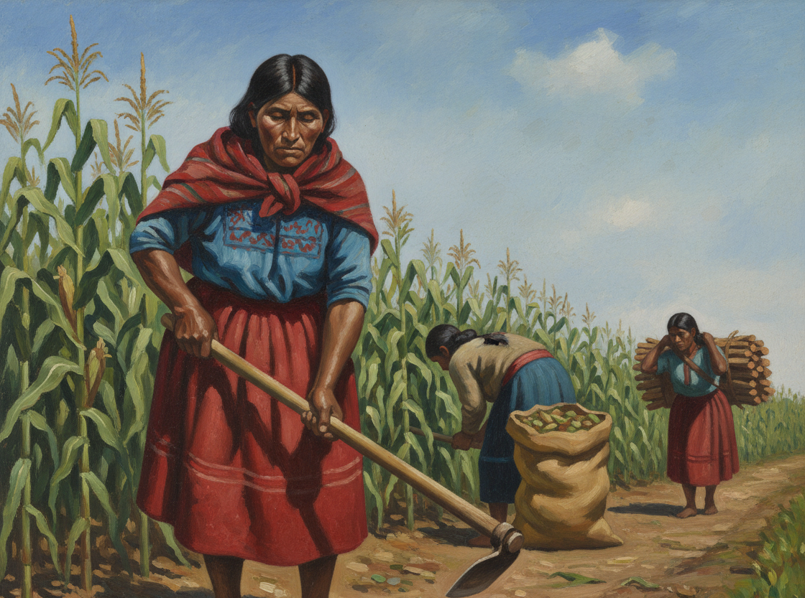

LITERATURA REALISTA ECUATORIANA
Por: Msc. Alejandro Córdova
La Generación del 30 y el Realismo Social
Apogeo 1920-1950: La Época de Oro de la Narrativa Ecuatoriana

Reacción al romanticismo:
Movimiento literario que surge como reacción al romanticismo y costumbrismo del siglo XIX.
Compromiso social:
Compromiso con la denuncia social y visibilización de clases marginadas y subalternos.
Ruptura estética:
Ruptura estética que marca la madurez de la narrativa nacional ecuatoriana.
Conciencia crítica:
Literatura como conciencia crítica del periodo post-liberal y transformaciones sociales.
Reacción al romanticismo y costumbrismo:
Surge como respuesta crítica al romanticismo y costumbrismo del siglo XIX.
Influencia de la Revolución Liberal:
Influencia de la Revolución Liberal (1895) y las corrientes socialistas internacionales.
Transformaciones sociopolíticas:
Respuesta a las profundas transformaciones sociopolíticas del Ecuador moderno.
Literatura como instrumento:
La literatura se convierte en instrumento de denuncia social y protesta política.
Compromiso con sectores marginados:
Compromiso ético con la representación de sectores marginados y subalternos.

Portada de "La Emancipada"
Miguel Riofrío (1863)

Portada de "Huasipungo"
Jorge Icaza (1934)
La Emancipada
Miguel Riofrío
1863
Primera novela nacional y pionera del realismo. Denuncia la opresión de género y violencia institucional.
A la Costa
Luis A. Martínez
1904
Primera novela realista ecuatoriana. Representa contradicciones regionales y sociales.
Los que se van
Grupo de Guayaquil
1930
Detonante del realismo social. Obra colectiva fundacional del movimiento.
Huasipungo
Jorge Icaza
1934
Referente continental del indigenismo. Denuncia del sistema hacendario andino.
El Grupo de Guayaquil, conocido también como "Los Cinco como un Puño", fue el colectivo más cohesionado del movimiento realista ecuatoriano. Este grupo revolucionó la narrativa nacional al centrar su mirada en la cultura del Litoral, rompiendo con la hegemonía de la literatura serrana y dando voz a sectores históricamente marginados.
Enfoque Temático
- La cultura montuvia y su identidad regional propia del Litoral
- La vida y explotación del obrero urbano (Masacre de Guayaquil 1922)
- Las dinámicas de explotación en la agroindustria costeña (arroz, cacao)
- La negritud afroecuatoriana de Esmeraldas y el Litoral Norte
- El espacio urbano de Guayaquil como escenario de modernización contradictoria
Características Literarias
- Fusión del realismo social con elementos míticos y legendarios
- Incorporación auténtica del habla montuvia, jergas populares y modismos costeños
- Precursores directos del Realismo Mágico latinoamericano
- Uso de figuras de contornos épicos en contextos animistas
- Prosa lírica que integra la mitología local (cultura Milagro-Quevedo)
OBRA FUNDACIONAL
Los que se van
1930 - Aguilera Malta, Gallegos Lara y Gil Gilbert
Libro de cuentos escrito colaborativamente que marca la consolidación del realismo social ecuatoriano.
IDENTIDAD CULTURAL
El Grupo de Guayaquil fue crucial en la construcción y reivindicación de la identidad del Litoral. Al dotar a sus personajes montuvios de fuerzas épicas y míticas, la narrativa costera fusiona la crítica social con la potencia de la identidad regional, elevando a los personajes por encima de la función de mera víctima.
LEGADO
Establecieron las bases del Realismo Mágico al integrar elementos legendarios y míticos en la representación de la realidad rural costeña. Demostraron que ser verdaderamente realista sobre la cultura ecuatoriana exigía integrar estas "realidades abracadabra".
Autores Principales
José de la Cuadra
Los Sangurimas
Precursor del Realismo Mágico. Literatura montuvia.
Joaquín Gallegos Lara
Las cruces sobre el agua
Realismo urbano y obrero. Masacre de 1922.
Demetrio Aguilera Malta
Don Goyo
Realismo mítico. Elementos fantásticos.
Enrique Gil Gilbert
Nuestro pan
Denuncia de explotación arrocera.
Alfredo Pareja Diezcanseco
Baldomera
Reivindicación de grupos marginados.
Adalberto Ortiz
Juyungo
Realismo afroecuatoriano.
El Grupo de la Sierra, aunque menos formalmente estructurado que el Grupo de Guayaquil, se enfocó en los Andes y la denuncia visceral de la explotación indígena en el sistema hacendario. Liderado por Jorge Icaza, este grupo consolidó el indigenismo radical ecuatoriano como corriente fundamental del realismo social.
Enfoque Temático
- La explotación sistemática del pueblo indígena en el sistema de hacienda
- El sistema de concertaje: forma apenas velada de esclavitud por deudas
- La servidumbre, abusos sexuales y violencia institucional contra comunidades andinas
- Las relaciones cuasi-feudales en el campo serrano
- La resistencia indígena y movimientos sociales (Daquilema, Tránsito Amaguaña, Dolores Cacuango)
Características Literarias
- Narrativa cruda y descarnada de las condiciones materiales de existencia
- Estructura narrativa binaria: explotador (hacendado, cura, teniente) vs. explotado (indígena)
- Incorporación de expresiones quichuas y reproducción fonética del habla indígena
- Tono pesimista que culmina frecuentemente en la derrota del protagonista indígena
- Función testimonial y documental de la realidad andina
OBRA PARADIGMÁTICA
Huasipungo
1934 - Jorge Icaza
Referente continental para la denuncia de la explotación indígena, que representa la lucha del indígena por la tenencia precaria de su tierra.
CONTEXTO HISTÓRICO
El indigenismo literario ecuatoriano respondió a la pervivencia de relaciones cuasi-feudales en el campo serrano. El sistema de concertaje que ataba al indígena a la hacienda mediante deudas impagables constituyó una forma de esclavitud que se mantuvo hasta mediados del siglo XX. La literatura coincidió con la emergencia de figuras clave en la resistencia indígena.
LEGADO
Consolidó el indigenismo radical como eje fundamental de la literatura ecuatoriana y latinoamericana. Estableció el esquema de la dicotomía explotador/explotado que definió la narrativa de denuncia social en los Andes.
Autores Principales
Jorge Icaza
Huasipungo
Figura cumbre del indigenismo ecuatoriano y latinoamericano.
Fernando Chávez
Plata y bronce
Consolidación de la dicotomía explotador/explotado.
Ángel Felicísimo Rojas
El éxodo de Yangana
Realismo tardío de la sierra sur ecuatoriana.
1. Prosa Clara, Directa y Objetiva
Explicación: El realismo ecuatoriano abandona el sentimentalismo romántico y adopta un estilo descriptivo sin ornamentos, enfocado en mostrar la realidad tal como es.
Salvador se detuvo al borde del camino. A lo lejos, los jornaleros marchaban bajo el sol como una procesión de sombras quemadas. El sudor rodaba con el polvo y el hambre en los ojos se hacía fiebre. Pensó que nada podía cambiar: el patrón dormía mientras los hombres morían en la zafra.
Fuente: A la costa - Luis A. Martínez (1904)
Análisis: Este fragmento muestra la descripción objetiva y directa de la realidad sin ornamentos poéticos, enfocándose en la dureza de las condiciones laborales.
2. Ruptura Lingüística: Uso de Jergas Populares y Modismos Locales
Explicación: Los autores se rebelaron contra el lenguaje academicista heredado, incorporando el habla auténtica de montuvios, indígenas y obreros para lograr verosimilitud.
Aquí donde me ven, postrado, jodido, sin casi poder levantarme de la hamaca, cuando mozo hacía daño... Le clavaba los ojos a una mujer, y ya estaba... No le quedaba más que templarse en el catre... Hacía raya, amigo!... Me agarraron miedo...
Fuente: Los Sangurimas - José de la Cuadra (1934)
Análisis: El lenguaje popular costeño auténtico, con sus modismos y estructura oral, representa la ruptura con el academicismo y da voz genuina al montuvio.
3. Temática de Denuncia Social
Explicación: El realismo social ecuatoriano se caracteriza por la denuncia visceral de la explotación, la injusticia estructural y la opresión de las clases trabajadoras.
El montuvio, machete en mano, cortaba caña y rabia. No había canto. No había esperanza. El capataz gritaba, y en su voz el miedo se volvía orden, y la orden, castigo.
Fuente: Los que se van - Grupo de Guayaquil (Gallegos Lara, Aguilera Malta, Gil Gilbert) (1930)
Análisis: Lenguaje directo y descarnado que denuncia la opresión laboral. El pueblo no es objeto decorativo, sino protagonista de su propia historia de sufrimiento.
4. Representación Fiel de la Realidad (Documentación Rigurosa)
Explicación: Los autores visitaban los ambientes que describirían, conversaban con los tipos sociales que representaban y tomaban notas para dar sensación de realidad innegable.
Salvador observó a los peones encorvados, sembrando bajo el sol ardiente. El sudor les corría por la espalda, y el capataz, látigo en mano, vigilaba sin descanso. Pensó entonces que la justicia del hombre era solo una palabra hueca, y que el trabajo, en aquella tierra, era una forma de castigo.
Fuente: A la costa - Luis A. Martínez (1904)
Análisis: Documentación rigurosa de condiciones laborales reales, con crítica al sistema económico agrario y las relaciones de poder.
5. Función Testimonial
Explicación: La literatura realista funcionó como registro histórico y sociológico, documentando eventos traumáticos y la vida de sectores marginados. Los personajes representan grupos humanos enteros, no individuos aislados.
Obra Paradigmática: Las cruces sobre el agua - Joaquín Gallegos Lara (1946)
Contexto Histórico: Narración de la Masacre de Guayaquil del 15 de noviembre de 1922, donde obreros fueron reprimidos violentamente por el Estado.
Análisis: Esta obra consolida la función testimonial del realismo como documento histórico clave sobre la represión estatal y la lucha obrera urbana.
6. Incorporación de Elementos Míticos (Precursor del Realismo Mágico)
Explicación: Obras del Grupo de Guayaquil integraron elementos legendarios, míticos y animistas, fusionando la denuncia social con la potencia de la identidad regional y la mitología local.
Obras Clave:
-
Los Sangurimas -
José de la Cuadra
(1934)
-
Don Goyo -
Demetrio Aguilera Malta
(1933)
Contexto Literario: Estas obras presentan figuras de contornos épicos y míticos (el matapalo como símbolo, la tierra como ser vivo, mitología Milagro-Quevedo), anticipando el Realismo Mágico latinoamericano.
Análisis: La realidad rural ecuatoriana estaba inherentemente ligada a mitos y supersticiones locales. Ser verdaderamente realista requería integrar estas "realidades abracadabra".
EL INDÍGENA
Sierra - Andes
Sistema de hacienda y concertaje. Explotación sistémica en el mundo andino.
EL MONTUVIO
Costa - Litoral
Identidad regional costeña. Cultura rural del litoral ecuatoriano.
EL OBRERO URBANO
Guayaquil - Ciudades
Masacre de 1922, lucha laboral. Proletariado urbano emergente.
EL AFROECUATORIANO
Esmeraldas - Litoral Norte
Reivindicación y discriminación racial. Cultura afrodescendiente.
Realismo Costumbrista
Representación de vida cotidiana, costumbres locales y lenguaje regional. Enfoque descriptivo de tradiciones populares.
Realismo Social
Denuncia directa de injusticias sociales, explotación laboral y condiciones de grupos vulnerables.
Indigenismo
Representación de la explotación de pueblos indígenas y dignificación de sus culturas ancestrales.
Realismo Afroecuatoriano
Exploración de la problemática afrodescendiente, procesos de transculturación y discriminación racial.
El realismo ecuatoriano surgió como respuesta crítica tanto al romanticismo como al costumbrismo que dominaron la literatura del siglo XIX. Para comprender su importancia, es fundamental entender las diferencias fundamentales entre estos tres movimientos que marcaron la evolución de la narrativa nacional.
ROMANTICISMO vs COSTUMBRISMO vs REALISMO
| Aspecto |
Romanticismo |
Costumbrismo |
Realismo |
| Visión del mundo |
Subjetiva, idealista, sentimental |
Descriptiva, pintoresca |
Objetiva, racional, crítica |
| Finalidad |
Expresar emoción individual, libertad, belleza |
Retratar costumbres y tradiciones locales |
Analizar y denunciar condiciones sociales |
| Personajes |
Heroicos, idealizados, trágicos |
Tipos sociales estereotipados |
Comunes, complejos, representativos |
| Lenguaje |
Poético, exaltado, metafórico |
Pintoresco, regional, con modismos locales |
Claro, directo, verosímil |
| Temas centrales |
Amor imposible, naturaleza sublime, patriotismo |
Vida cotidiana, relaciones inmediatas |
Pobreza, desigualdad, conflicto social |
| Actitud |
Escapista, busca consuelo en la belleza |
Contemplativa, evita conflicto social |
Comprometida, confronta problemas contemporáneos |
| Visión de la realidad |
Idealismo, espiritualidad |
Estática, mundo tradicional |
Materialista, documental |
| Género dominante |
Poesía lírica, novela romántica |
Crónica, cuento y miniatura |
Novela social, narrativa objetiva |
| Ejemplo ecuatoriano |
Cumandá (Juan León Mera, 1879) |
Cosas de mi tierra (José de la Cuadra) |
A la costa (Luis A. Martínez, 1904) |
EJEMPLOS LITERARIOS
1. EJEMPLO ROMÁNTICO
Obra: Cumandá - Juan León Mera (1879)
Cumandá, pálida como el lirio, hermosa como la luz del amanecer, miró con sus grandes ojos llenos de lágrimas al joven que amaba. La selva, agitada por el viento, parecía condolerse con ella. ¡Oh amor, fuerza invencible que une almas a pesar de las razas y las leyes de los hombres!
Fuente: Cumandá - Juan León Mera (1879)
Análisis: Exalta la emoción y el ideal amoroso. La naturaleza participa del sentimiento humano (personificación). Visión idealista que busca la belleza, la pureza y el heroísmo. Lenguaje poético, exaltado y cargado de lirismo.
2. EJEMPLO COSTUMBRISTA
Obra: Cosas de mi tierra - José de la Cuadra (primeras narraciones costumbristas)
El viejo sacó su sombrero, lo limpió con el dorso del brazo, y saludó al patrón con una sonrisa cansada. Las mujeres, desde el corredor, cuchicheaban, pendientes del paso del tren como si el humo negro trajera noticias del alma de la ciudad. El pueblo volvió a su rumor habitual, al pregón, al sonido de las campanas.
Fuente: Cosas de mi tierra - José de la Cuadra
Análisis: Representa el espíritu costumbrista por su valor descriptivo y tono pintoresco. El interés se centra en retratar la vida cotidiana rural, las relaciones sociales inmediatas y los paisajes tradicionales, sin profundizar en las causas sociales o económicas. El enfoque es estático, contemplativo y amable.
El costumbrismo 'mira' la realidad, el realismo 'la interpreta y la cuestiona', marcando así la madurez de la narrativa ecuatoriana.
3. EJEMPLO REALISTA - A LA COSTA
Obra: A la costa - Luis A. Martínez (1904)
Salvador se detuvo al borde del camino. A lo lejos, los jornaleros marchaban bajo el sol como una procesión de sombras quemadas. El sudor rodaba con el polvo y el hambre en los ojos se hacía fiebre. Pensó que nada podía cambiar: el patrón dormía mientras los hombres morían en la zafra.
Fuente: A la costa - Luis A. Martínez (1904)
Análisis: El enfoque realista convierte la descripción en testimonio de desigualdad, revelando la injusticia social y la crítica al modelo económico agrario. Visión objetiva y comprometida con la realidad del trabajador rural, alejándose del tono armonioso del costumbrismo.
4. EJEMPLO REALISMO SOCIAL
Obra: Los que se van - Gallegos Lara, Aguilera Malta y Gil Gilbert (1930)
El montuvio, machete en mano, cortaba caña y rabia. No había canto. No había esperanza. El capataz gritaba, y en su voz el miedo se volvía orden, y la orden, castigo.
Fuente: Los que se van - Grupo de Guayaquil (1930)
Análisis: Lenguaje directo, descarnado y socialmente consciente. Busca denunciar la opresión de los trabajadores y reclamar justicia. El pueblo no es objeto decorativo, sino protagonista de su propia historia.
El romanticismo mira al cielo de los sentimientos, el realismo al suelo de los hechos: así se define el paso de una literatura del ensueño a una literatura de conciencia.
Precursor del Realismo Mágico
El realismo ecuatoriano sentó las bases del Realismo Mágico latinoamericano, especialmente a través de la obra de José de la Cuadra y Demetrio Aguilera Malta.
Construcción de identidad nacional
Contribuyó a la construcción de una identidad nacional centrada en lo subalterno y los sectores marginados de la sociedad ecuatoriana.
Función testimonial
Estableció la literatura como registro histórico-sociológico y documento de las condiciones sociales del Ecuador del siglo XX.
Conciencia crítica
Transformó la literatura de entretenimiento en instrumento de conciencia crítica y protesta social.
Innovación lingüística
Revolucionó el lenguaje literario mediante la incorporación de hablas populares, jergas regionales y modalidades lingüísticas populares.
Influencia continental
Influyó significativamente en la literatura del Boom latinoamericano y en los movimientos realistas continentales.
Miguel Riofrío
1822 - 1879
Loja, Ecuador
Jurista, político y escritor ecuatoriano. Riofrío es autor de la primera novela ecuatoriana, 'La Emancipada' (1863), considerada obra pionera del realismo literario latinoamericano. Su novela denuncia la opresión de género, la violencia institucional y la negación de derechos fundamentales.
Aporte:
Primera novela nacional ecuatoriana. Pionero del realismo y la denuncia de la opresión de género.
Luis A. Martínez
1869 - 1909
Ambato, Ecuador
Pintor, escritor y político ecuatoriano. Martínez fue una figura puente entre el costumbrismo decimonónico y el realismo social del siglo XX. Su novela 'A la Costa' inaugura la representación literaria del espacio costeño ecuatoriano y las contradicciones regionales.
Obras Principales:
- A la Costa (1904)
- En el vagón (1899)
Aporte:
Primera novela realista ecuatoriana. Representación de contradicciones sociales y conflictos regionales.
José de la Cuadra
1903 - 1941
Guayaquil, Ecuador
Máximo exponente de la literatura montuvia ecuatoriana. Médico de profesión, De la Cuadra dedicó su vida a retratar la cultura del Litoral ecuatoriano. Su obra se caracteriza por la fusión del realismo social con elementos míticos y legendarios, convirtiéndose en precursor del Realismo Mágico.
Obras Principales:
- Los Sangurimas (1934)
- Horno
- La Tigra
Aporte:
Precursor del Realismo Mágico ecuatoriano. Creador de la narrativa montuvia que integra elementos épicos y míticos.
Joaquín Gallegos Lara
1911 - 1947
Guayaquil, Ecuador
Militante comunista y escritor comprometido con las causas sociales. A pesar de padecer una enfermedad degenerativa que lo mantuvo postrado gran parte de su vida, Gallegos Lara se convirtió en una figura central del realismo social ecuatoriano.
Obras Principales:
- Las cruces sobre el agua (1946)
- Los que se van (1930, coautor)
Aporte:
Introdujo el tema urbano y obrero en el realismo ecuatoriano. Su novela sobre la Masacre de 1922 es documento testimonial clave.
Demetrio Aguilera Malta
1909 - 1981
Guayaquil, Ecuador
Narrador, dramaturgo y diplomático ecuatoriano. Pionero del realismo social, Aguilera Malta evolucionó hacia formas narrativas más complejas que integraban lo mítico, lo fantástico y la ciencia ficción.
Obras Principales:
- Don Goyo (1933)
- Siete lunas y siete serpientes (1970)
Aporte:
Realismo mítico. Integración de mitología local y elementos legendarios.
Enrique Gil Gilbert
1912 - 1973
Guayaquil, Ecuador
Escritor y periodista ecuatoriano, miembro fundador del 'Grupo de Guayaquil'. Gil Gilbert combinó su militancia política de izquierda con una producción literaria centrada en la denuncia de la explotación agraria.
Obras Principales:
- Nuestro pan (1942)
- Los que se van (1930, coautor)
Aporte:
Denuncia de la explotación en plantaciones arroceras.
Alfredo Pareja Diezcanseco
1908 - 1993
Guayaquil, Ecuador
Narrador, ensayista, diplomático e historiador ecuatoriano. Pareja Diezcanseco fue una de las figuras más prolíficas del realismo social, transitando posteriormente hacia la novela histórica y la literatura simbólica.
Obras Principales:
- Baldomera
- El muelle
- Las tres ratas
Aporte:
Reivindicación de grupos marginados. Dimensión histórica y sociológica del realismo ecuatoriano.
Adalberto Ortiz
1914 - 2003
Esmeraldas, Ecuador
Poeta, narrador, diplomático y antropólogo afroecuatoriano. Ortiz dedicó su vida a la reivindicación de la cultura afroecuatoriana y la denuncia del racismo estructural.
Obras Principales:
- Juyungo (1943)
- La entundada y otros cuentos
Aporte:
Fundador del realismo afroecuatoriano. Reivindicación de la negritud y denuncia de la discriminación racial.
Nelson Estupiñán Bass
1912 - 2002
Esmeraldas, Ecuador
Poeta, novelista, ensayista y periodista afroecuatoriano. Fue pionero en la literatura de denuncia antirracista en Ecuador, reivindicando la cultura afroesmeraldeña y visibilizando la discriminación estructural. Su obra fundacional 'Cuando los guayacanes florecían' es pieza clave del realismo afroecuatoriano por su retrato de la esclavitud, la resistencia y la identidad negra en el Ecuador.
Obras Principales:
- Cuando los guayacanes florecían (1954)
- El último río (1966)
- Canto negro por la luz (1942, poesía)
Aporte:
Dignificación literaria de lo afroecuatoriano. Dimensión continental del realismo social desde la perspectiva de la negritud. Denuncia del racismo y celebración de la identidad afrodescendiente.
Jorge Icaza
1906 - 1978
Quito, Ecuador
Figura cumbre del indigenismo ecuatoriano y latinoamericano. Dramaturgo y novelista, Icaza dedicó su obra a denunciar la explotación sistemática del pueblo indígena en el sistema hacendario andino. Su narrativa cruda y descarnada representa el sistema de concertaje, los abusos sexuales y la servidumbre.
Obras Principales:
- Huasipungo (1934)
- En las calles (1935)
- Cholos (1938)
Aporte:
Consolidación del indigenismo radical ecuatoriano. Referente continental de la denuncia de la explotación indígena.
Fernando Chávez
1902 - 1999
Quito, Ecuador
Narrador indigenista ecuatoriano. Chávez contribuyó a consolidar el esquema fundamental del indigenismo literario: la dicotomía explotador/explotado en el contexto del sistema hacendario andino.
Obras Principales:
- Plata y bronce
- El que no quiso matar
Aporte:
Consolidación de la dicotomía explotador/explotado en el indigenismo ecuatoriano.
Ángel Felicísimo Rojas
1909 - 2003
Loja, Ecuador
Escritor lojano representante del realismo social en la sierra sur ecuatoriana. Rojas exploró las realidades rurales andinas desde una perspectiva regional que enriqueció la diversidad temática del movimiento realista.
Obras Principales:
- El éxodo de Yangana
- Banca (1930)
Aporte:
Realismo tardío centrado en la sierra sur ecuatoriana.
Pedro Jorge Vera
1914 - 1999
Quito, Ecuador
Novelista, cuentista, ensayista y dramaturgo ecuatoriano. Militante comunista, Vera integró coherentemente compromiso político y creación literaria. Pionero del realismo urbano quitense, exploró la vida de la pequeña burguesía, la clase media urbana y los procesos de modernización contradictoria de la capital. Su obra representa un puente entre la Generación del 30 y la narrativa contemporánea, transitando del realismo social hacia formas más experimentales.
Obras Principales:
- Los animales puros (1946)
- El pueblo soy yo (1976)
- Luto eterno (1953)
- Los nuevos años (ensayo, 1956)
Aporte:
Realismo urbano quitense. Ampliación del espectro social del realismo ecuatoriano más allá del campesinado. Exploración de la pequeña burguesía y procesos de modernización. Puente entre realismo social y narrativa experimental.